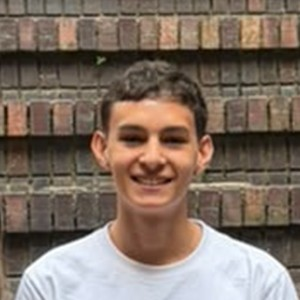
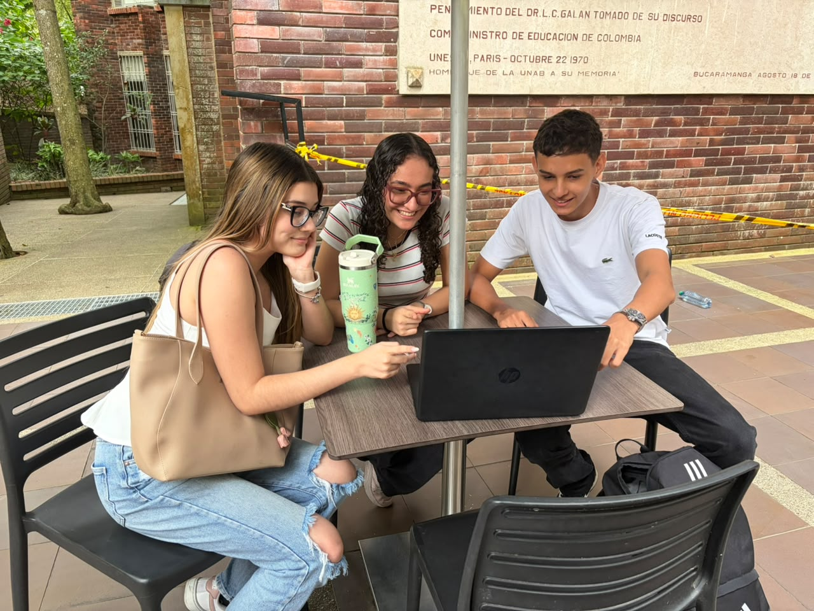
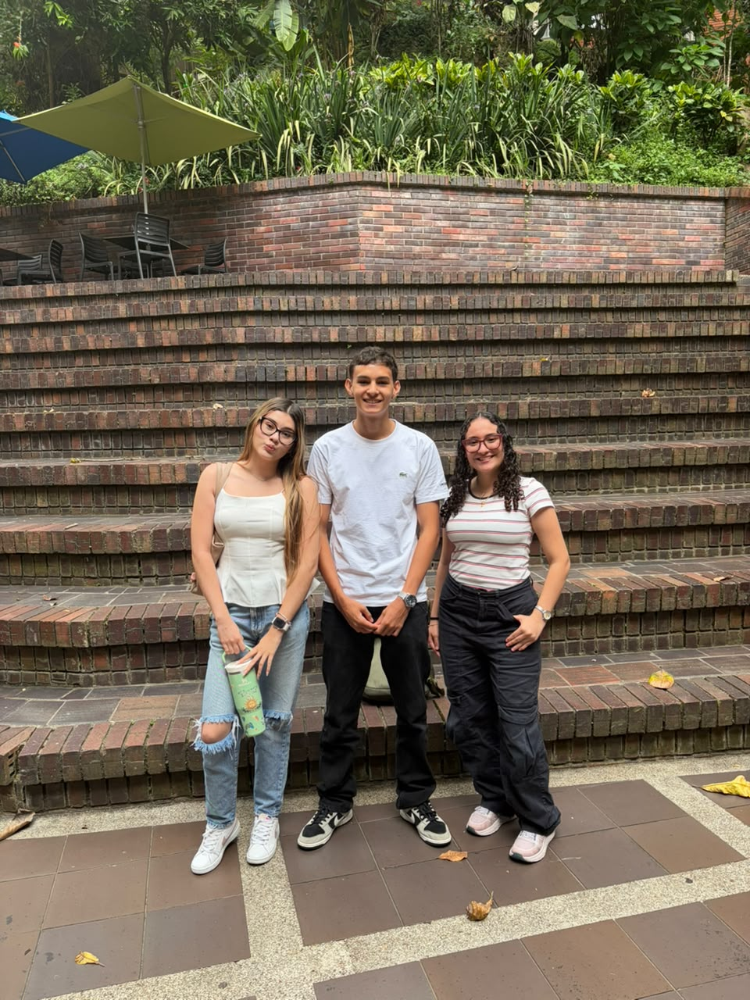

Creadores de la página
Sobre UNAB 360
Hicimos esta página para facilitar el acceso a la información de los estudiantes de la UNAB. Muchas veces las horas libres se pierden porque no se sabe dónde ir o cuántas llevamos, y los datos están repartidos en varias plataformas.
Por eso UNAB 360 junta en un solo sitio el control de horas libres, los lugares del campus donde se pueden cumplir, el calendario con clases, parciales y entregas, las tareas, la asistencia, el simulador de notas y los enlaces a Mi Portal U, Cosmos, Tema y Canvas.
La idea es que cada estudiante organice su semestre de forma sencilla, desde el computador o desde el celular.
Alejandra Suárez Durán
Creadora de la página
Estudiante de Ingeniería de Sistemas, 2.º semestre

Thore Nicholas Dohn Cerchiaro
Creador de la página
Estudiante de Ingeniería de Sistemas, 2.º semestre
Betsy Katheryn Ardila Ardila
Creadora de la página
Estudiante de Ingeniería de Sistemas, 2.º semestre
Nuestro equipo en el campus

